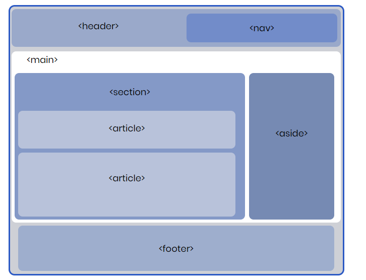

Inicio

Sobre mí Soy Hernan Alonso Vesga, estudiante de ingeniería informática de la Universidad Internacional de la Rioja y Tecnologo administrador de redes con amplia experiencia como analista de soporte IT para empresas como Mediacommerce, Comsis, Getronics, Axity, etc. |
Objetivos El objetivo principal de esta actividad es poner en práctica los conceptos básicos relacionados con la programación (HTML+CSS). De esta forma, el alumno será capaz de crear el mismo un sitio web sencillo, en caso un blog, donde los conocimientos aplicados podrán ser extrapolados a cualquier sitio web que se quiera crear desde cero. Descripción de la actividad El blog a crear deberá contener un mínimo de 3 entradas sencillas (texto + imágenes) donde se explique brevemente los aspectos mas relevantes de los estándares utilizados en el desarrollo web (una entrada para HTML, una para CSS y otra para JavaScript). Resolución Para poder realizar la actividad, deberá utilizarse un editor de texto o IDE de preferencia generando el código HTML y CSS que sea necesario. El sitio web deberá tener la siguiente estructura básica: 
|